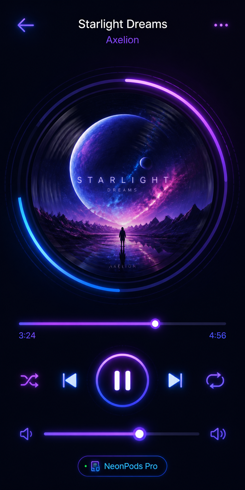
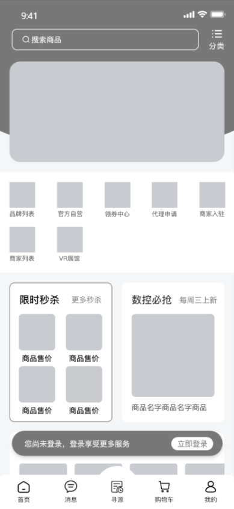
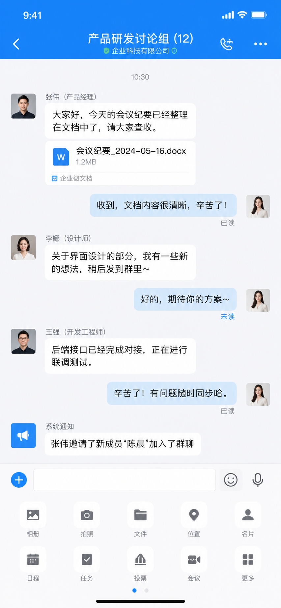
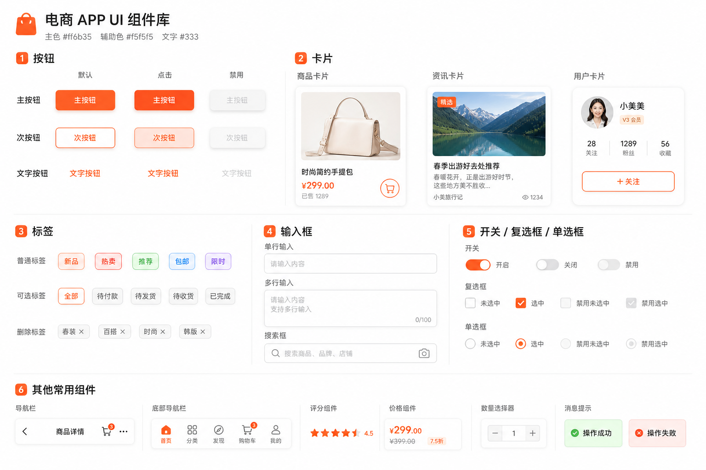
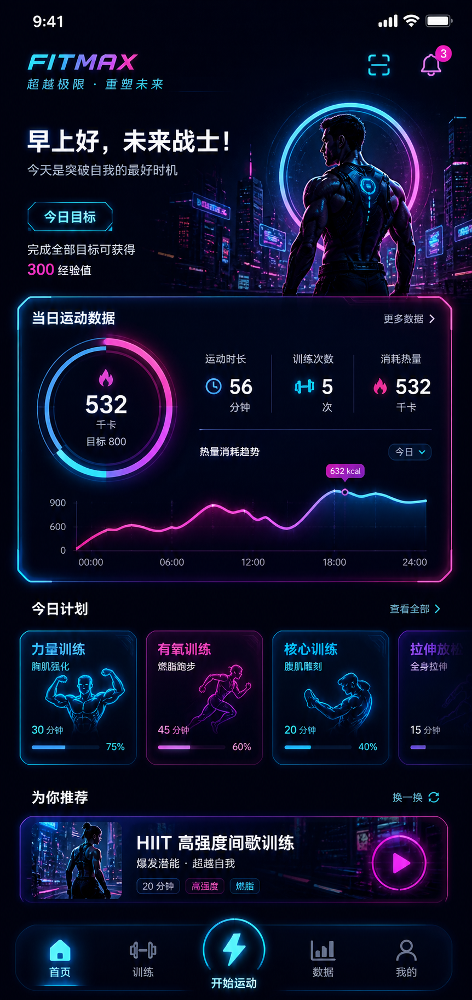
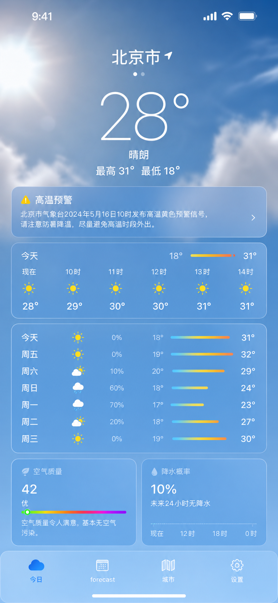
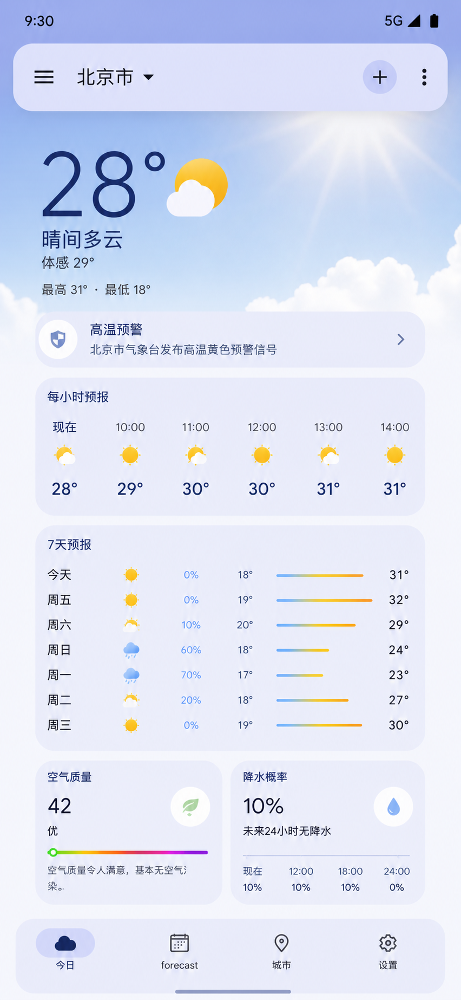
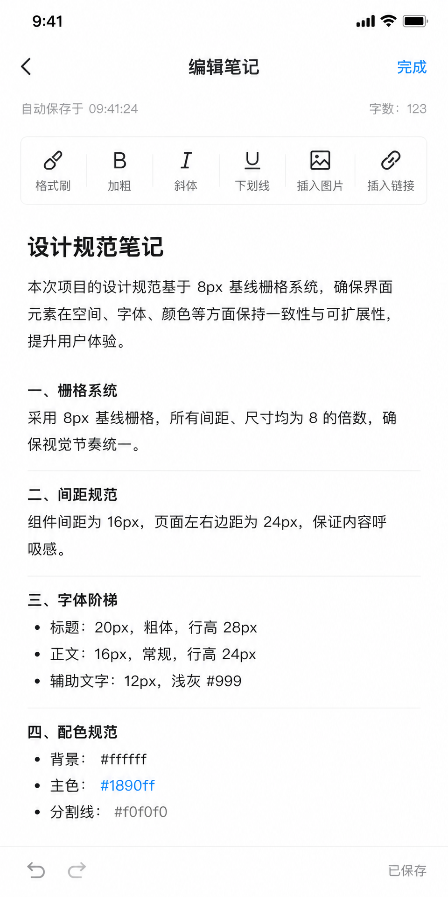
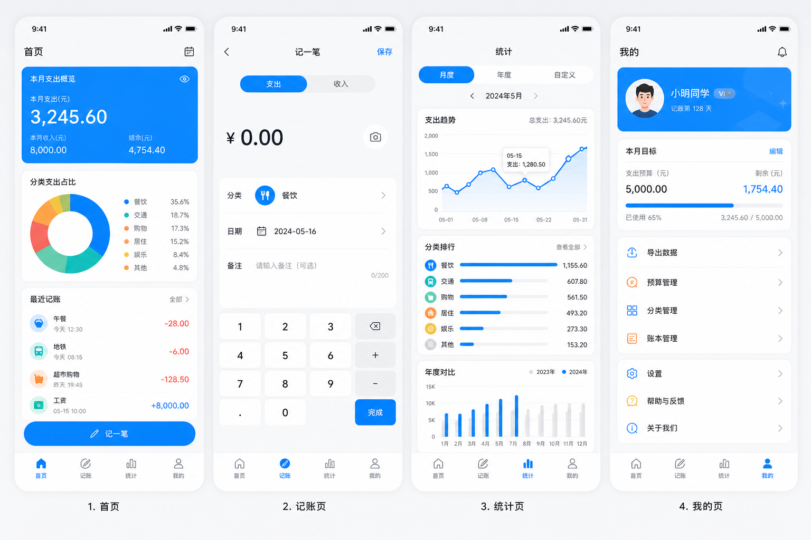

The Verdict First
GPT Image 2 for UI generation is usable, but not ready for direct delivery.
Strengths:
- Chinese text rendering is finally accurate — buttons won't show garbled text anymore
- Understands natural language like "参考微信风格" or "follow Material Design guidelines"
- Generated interfaces have design sense, not that obvious "AI slop" look
Weaknesses:
- Detail precision isn't enough — still needs designer tweaking for real projects
- Consistency control is unstable — two generations might differ significantly
- Complex interactive pages (like multi-level nested forms) tend to break
My take: GPT Image 2 is great for UI inspiration and drafts, not suitable as a final deliverable.
Case 01: One-Prompt Full UI — Music App Player
One-Prompt Full UI Generation — Music App Player

What worked: The interface came out with everything included. Album cover is indeed circular, progress bar position is correct, buttons are all there.
What didn't work: Hierarchy between artist and song name isn't clear enough, font size difference is too small. The "3:24/4:56" time rendered accurately but the font is too thin, not prominent enough on dark background. Neon glow effect is there but colors are a bit too saturated — you'd need to desaturate for real projects.
Best use: One-prompt UI generation gets you to 70%. The remaining 30% needs designer adjustment.
Case 02: Wireframe to High-Fidelity — E-commerce Product Detail
Wireframe to High-Fidelity — E-commerce Product Page
Steps: Draw a simple wireframe first, then upload and describe the high-fidelity result you want.

What worked: Element positions from the wireframe were mostly respected. Colors changed to warm palette as requested. Button shadows and rounded corners are there — no need to manually add in Photoshop.
What didn't work: If wireframe is too rough (like sketchy hand-drawn), AI might misinterpret. Generated image is raster, not vector — less flexible for later edits.
Best use: Draw a rough layout in Figma or MasterGo, let GPT Image 2 output high-fidelity visuals. One of the most practical use cases.
Case 03: Replicating Known App Style — WeChat-Style Enterprise Chat
Replicating Known App Style — WeChat-Style Enterprise Chat

What worked: WeChat style is about 70-80% there. Message bubble style, input bar layout — you can immediately tell it "referenced WeChat".
What didn't work: "Read/unread" indicators are in weird positions — on the right side of bubbles instead of the usual below the time. Overall feels like "WeChat style home page, but something's off" — a subtle sense of wrongness.
Best use: AI can achieve "spiritual resemblance" in style replication, but "formal resemblance" isn't precise enough. Use this method for inspiration if you want something "with that WeChat flavor". For pixel-perfect replication, do it manually.
Case 04: UI Component Library — E-commerce App Components
UI Component Library Generation — E-commerce App

What worked: All components were generated. Three button states, three card types — everything was requested.
What didn't work: Consistency is lacking. Although you required unified 8px corner radius, some components look like 8px, some look like 12px, some like 4px. Shadow effects also vary. Components arranged on one image but layout is messy — doesn't look like proper component library documentation.
Best use: The direction is correct, but GPT Image 2 currently can't handle "precise consistency control". Recommend building component libraries manually in Figma. GPT Image 2 is better for "finding component design inspiration", not outputting final usable component libraries.
Case 05: Specific Design Style — Cyberpunk Fitness App
Specific Design Style — Cyberpunk Fitness App

What worked: AI understands that cyberpunk vibe. Dark background + neon colors — generated interface looks like UI from Cyberpunk 2077. Data visualization charts are there, neon glow effects achieved.
What didn't work: Neon glow effects are a bit overdone — might be too glaring for actual app use. "Futuristic font" requirement AI didn't quite understand — still using regular sans-serif. Overall visual impact is cool but usability is average — text and background contrast might not be enough for extended reading.
Best use: If you want a "visually impactful" stylized interface, GPT Image 2 works great. But for everyday utility apps, this strong style might sacrifice usability.
Case 06: Cross-Platform UI — iOS vs Android Weather App
Cross-Platform UI — iOS vs Android Weather App
iOS Prompt:
Android Prompt:


What worked: iOS and Android versions do show differences — AI can distinguish two different design languages. iOS version corner radius does look smaller (around 12px feel), Android version has larger radius.
What didn't work: Strictly speaking, if you compare against iOS HIG and Material Design specs, the generated interface only has "that flavor" — detail spec compliance isn't strict enough.
Best use: Cross-platform UI generation is good for quickly creating demo slides that "look like iOS/Android". For formal projects requiring strict platform spec compliance, manual review is still needed.
Case 07: Design System Compliance — Notes App Editor
Design System Compliance — Notes App Editor

What worked: AI's understanding of design specs is better than I expected. 8px grid, 16px spacing, 24px margin — generated image basically follows these numerical requirements. Type scale shows hierarchy, headings are indeed larger and bolder.
What didn't work: You required "strictly follow specs" but some spacing in generated interface doesn't look like strict 16px — AI might have compromised between "aesthetic sense" and "strict execution". Toolbar icons have inconsistent styles — some realistic, some flat.
Best use: GPT Image 2 can understand design specs but can't guarantee 100% strict execution. Good for "generating drafts by spec", but final review by designer is still needed.
Case 08: Complete App Page Flow — Accounting App
Complete App Page Flow — Accounting App

What worked: All 4 pages generated, unified style basically achieved. Home, Add Entry, Stats, Profile — all elements are there.
What didn't work: The 4 pages "look like a set" but looking closely you'll notice inconsistent details. For example, home page card corner radius is 8px, but chart cards on stats page look like 12px.
Best use: This approach is good for project proposal "overview display" — letting clients see at a glance what pages the app has. But high-fidelity prototypes for each page are still recommended to generate and optimize separately.
Summary Table
| Case | UI Type | Utility | Score |
|---|---|---|---|
| 01 | One-Prompt Full UI | ★★★☆☆ | 3.5/5 |
| 02 | Wireframe → High-Fidelity | ★★★★☆ | 4.0/5 |
| 03 | Replicate Known App | ★★★☆☆ | 3.5/5 |
| 04 | Component Library | ★★☆☆☆ | 2.5/5 |
| 05 | Specific Style UI | ★★★★☆ | 4.0/5 |
| 06 | Cross-Platform UI | ★★★☆☆ | 3.5/5 |
| 07 | By Spec Generation | ★★★☆☆ | 3.5/5 |
| 08 | Complete Page Flow | ★★★☆☆ | 3.5/5 |
My Honest Takeaways
After testing these 8 scenarios, I think GPT Image 2's biggest value in UI generation is not "replacing designers" but "making designer ideas visualize faster".
Before, if you had a UI idea, you'd need to open Figma, set up grids, adjust components — spending half an hour just to see a rough draft. Now you spend 30 seconds writing a prompt, and in one minute you can see 4 different options.
This efficiency difference is the real dividend AI brings to designers.
But another thing is clear: AI-generated UI still can't reach "direct delivery" quality. Detail precision, consistency control, platform spec compliance — these still need human touch.
My recommendation: Use GPT Image 2 to quickly explore directions, use Figma to refine the final draft. AI handles breadth of inspiration, humans handle depth of quality control.